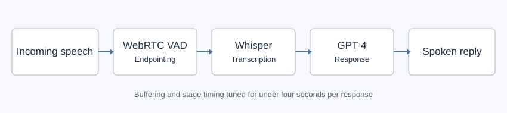

Streaming Voice Agent
A low-latency voice automation prototype built for a startup exploring a Carl Zeiss sales opportunity.

Problem
A useful telephone agent has to listen, transcribe, respond and return speech quickly enough for conversation.
Work
- Built the streaming service with Node.js and WebSockets.
- Integrated WebRTC voice activity detection, Whisper transcription and GPT-4 response generation.
- Tuned buffering and pipeline stages under Asif Mufti's supervision.
Result
- Delivered spoken responses in under four seconds for a conversational sales demo.
- Demonstrated the system for a prospective Carl Zeiss opportunity.